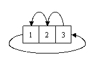

Дан одномерный массив размерности N (0≤N≤1000). Сдвинуть данный массив на K ячеек влево (0≤K≤2N). Сдвиг происходит циклически, то есть первый элемент при сдвиге переходит на последнюю позицию. Например, дана матрица [1 2 3], N=3, K=1, ответ: [2 3 1]. Элементами массива являются числа, по модулю не превосходящие 215.
|
Пример теста |
Пример ответа |
|
3 5 3 10 5 -1 2 0 3 1 1 2 3 0 0 |
2 0 10 5 -1 2 3 1 |
Источник: Денис Назаров. Олимпиады
школьников в Уфе.